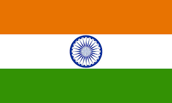
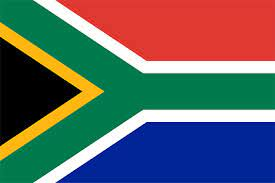
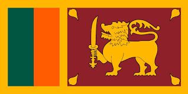
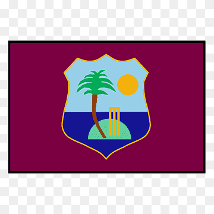
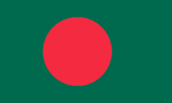
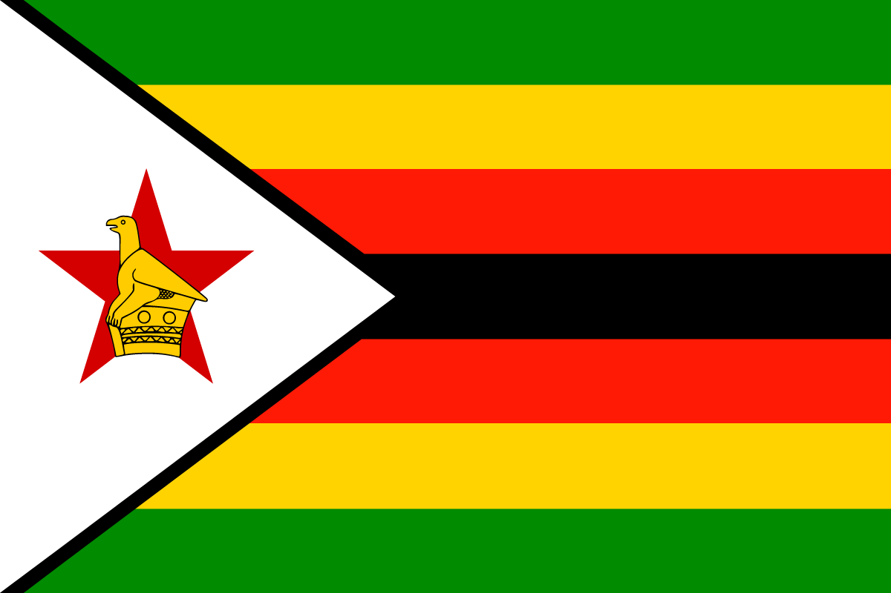

ICC TEST Team Rankings | ||||
|---|---|---|---|---|
| Position | Team | Matches | Points | Ratings |
| 1 | Australia | 39 | 9,761 | 250 |
| 2 | India | 55 | 14,760 | 268 |
| 3 | South Africa | 37 | 9,554 | 258 |
| 4 |  England England |
41 | 10,761 | 262 |
| 5 | New Zealand | 38 | 9,594 | 252 |
| 6 |  Pakistan Pakistan |
43 | 11,060 | 257 |
| 7 | Srilanka | 42 | 9,964 | 237 |
| 8 | West Indies | 46 | 11,093 | 241 |
| 9 | Bangladesh | 42 | 9,402 | 224 |
| 10 | Zimbabwe | 27 | 5,919 | 219 |
Test cricket is a form of first-class cricket played at international level between teams representing full member countries of the International Cricket Council (ICC). A match consists of four innings (two per team) and is scheduled to last for up to five days. In the past, some Test matches had no time limit and were called Timeless Tests. The term "test match" was originally coined in 1861–62 but in a different context.Test cricket did not become an officially recognised format until the 1890s, but many international matches since 1877 have been retrospectively awarded Test status. The first such match took place at the Melbourne Cricket Ground (MCG) in March 1877 between teams which were then known as a Combined Australian XI and James Lillywhite's XI, the latter a team of visiting English professionals. Matches between Australia and England were first called "test matches" in 1892. The first definitive list of retrospective Tests was written by South Australian journalist Clarence P. Moody two years later and, by the end of the century, had gained acceptance.There are now twelve full ICC member countries playing Test cricket. Day/night Tests were permitted by the ICC in 2012 and the first day/night match was between Australia and New Zealand at the Adelaide Oval in November 2015.